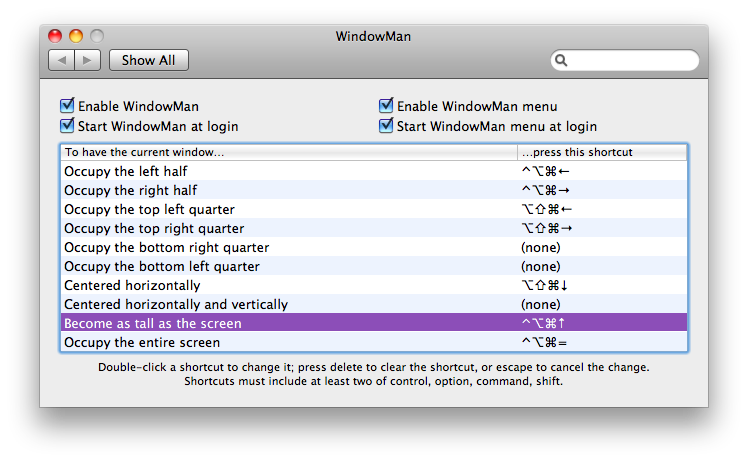
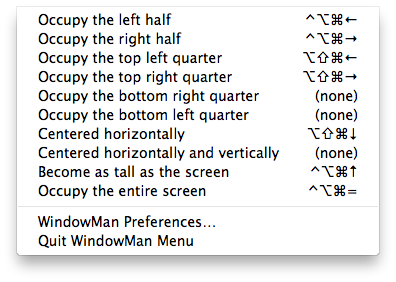

WindowMan
Freely resize and move Mac OS X windows with a hotkey shortcut
Download WindowMan 0.1.1 (released May 14, 2010). Mac OS X 10.6 only. No charge whatsoever, and no warranty of any kind.
Bugs, feature suggestions, and anything else noteworthy should be emailed to nolan@nolanw.ca.
WindowMan helps you arrange the windows on your displays. You pick a keyboard shortcut or hotkey, then assign it to an action like "become as tall as the screen". As long as WindowMan is enabled, any resizable window can instantly become as tall as the screen. Just press your keyboard shortcut.
WindowMan also comes with a menu. From your menu bar, it summarizes the keyboard shortcuts you've set and the different arrangements WindowMan can provide. You can even try out a particular action without setting a keyboard shortcut, just to see what it does.
How do I uninstall WindowMan?
The same way you uninstall any preference pane.
- Open System Preferences.
- Right-click (or control-click) WindowMan in System Preferences.
- Select "Remove".
Why an installer?
I hate them too. Installers always feel like they're dumping random files to unknown places, whether or not they actually do. Worse, there's no automatic uninstallation; you just hope the developer provides an uninstall script. Unfortunately, an installer package best solves the one big problem I had with WindowMan. When you download the WindowMan preference pane on its own (as in, not part of an installer package), the embedded helper applications are put into quarantine. (You know, the "You downloaded this application from the internet, are you sure you want to open it?" message.) The System Preferences application can't handle that, and beachballs for awhile. If you're lucky and you switch back and forth between other applications for a minute, you get a chance to allow the helper applications out of quarantine. It's a painful user experience, even more so than an installer. If you know of a better way (and I'm not blindly running xattr in the prefpane), drop me a line. For what it's worth, the Growl project reached the same conclusions, and I respect that project.
Thanks
Shift It inspired me to make a free offering that does this with configurable keyboard shortcuts, and saved me a lot of time burrowing through various APIs. Growl suggested the design of the components (prefpane, menu, helper) of WindowMan. Shortcut Recorder provided some fantastic signposts at the stumbling blocks of key codes and modifier flags. Packages for greatly easing the making of installer packages.